svdinesh
svdinesh
BUSHCRAFT
BUSHCRAFT
THE ULTIMATE GUIDE TO SURVIVAL IN THE
WILDERNESS
Richard Graves
Skyhorse Publishing
Copyright © 1972,2013 by Richard Graves All Rights Reserved.
No part of this book may be reproduced in any manner without the express written consent of the publisher, except in the case of brief excerpts in critical reviews or articles. All inquiries should be addressed to Skyhorse Publishing, 307 West 36th Street, 11th
Floor, New York, NY 10018.
Skyhorse Publishing books may be purchased in bulk at special discounts for sales promotion, corporate gifts, fund-raising, or educational purposes. Special editions can also be created to specifications. For details, contact the Special Sales Department,
Skyhorse Publishing, 307 West 36th Street, 11th Floor, New York,
NY 10018 or info@skyhorsepublishing.com.
Skyhorse® and Skyhorse Publishing® are registered trademarks of
Skyhorse Publishing, Inc.®, a Delaware corporation.
www.skyhorsepublishing.com
10 987654321
Library of Congress Cataloging-in-Publication Data is available on file.
ISBN: 978-1-62087-361-8
Printed in the United States of America
CONTENTS
1. ROPES AND CORDS
2. HUTS AND THATCHING
3. CAMPCRAFT
4. FOOD AND WATER
5. FIRE MAKING
6. KNOTS AND LAS HINGS
7. TRACKS AND LURES
8. S NARES AND TRAPS
9. TRAVEL AND GEAR
10. TIME AND DIRECTION
INDEX
BUSHCRAFT
THE PRACTICE OF BUS HCRAFT shows many unexpected results. The five senses are sharpened, and consequently the joy of being alive is greater.
The individual’s ability to adapt and improvise is developed to a remarkable degree. This in turn leads to increased self-confidence.
Self-confidence, and the ability to adapt to a changing environment and to overcome difficulties, is followed by a rapid improvement in the individual’s daily work. This in turn leads to advancement and promotion.
Bushcraft, by developing adaptability, provides a broadening influence, a necessary counter to offset the narrowing influence of modern specialisation.
For this work of bushcraft all that is needed is a sharp cutting implement: knife, axe or machete. The last is the most useful. For the work, dead materials are most suitable. The practice of bushcraft conserves, and does not destroy, wild life.
R.H.G.
CHAPTER 1
ROPES AND CORDS
One of the first needs in Bushcraft is the ability to join poles or sticks. The only method available is by the use of lashings.
To use lashings however, it is necessary to have, find or make, materials for this purpose.
The ability to spin, or plait fibres into ropes or cords is one of the oldest of man’s primitive skills. The method is simple, and follows precisely the same stages that are made use of by today’s complicated machines.
The material from which to spin or plait ropes or cords is in abundance everywhere. Any fibrous material which has reasonable length, moderate strength and is flexible or pliable can be used.
These are the three things to look for, and they can be found in many vines, grasses, barks, palms, and even in the hair of animals.
The breaking strains of handmade ropes and cords varies greatly with different materials, consequently it is essential that the rope or cord be tested for the purpose for which it will be used, before being actually put to use.
The uses to which these handmade ropes and cords can be put, apart from lashing, is almost endless, and some few are included in this book.
THE MAKING OF ROPES AND CORDS
Almost any natural fibrous material can be spun into good serviceable rope or cord, and many materials which have a length of
12 to 24 inches, or more can be braided or plaited. Ropes of up to
3 and 4 inches diameter can be 'laid’ by four people, and breaking strains for bush-made rope of one inch diameter range from 100 lbs. to as high as 2,000 or 3,000 lbs.
BREAKING S TRAINS
Taking a three lay rope of 1 inch diameter as standard, the following table of breaking strains may serve to give a fair idea of general strengths of various materials. For safety sake always regard the lowest figure as the breaking strain unless you know otherwise.
Green Grass........ 100 lbs. to 250 lbs.
Bark Fibre............ 500 lbs. to 1,500 lbs.
Palm Fibre............ 650 lbs. to 2,000 lbs.
Sedges.......... 2,000 lbs. to 2,500 lbs.
M onkey Rope (Lianas).... 560 lbs. to 700 lbs.
Lawyer Vine (Calamus).... ½ inch dia. 1,200 lbs.
Double the diameter quadruples the breaking strain.
Halve the diameter, and you reduce the breaking strain to one fourth.

PRINCIPLES OF ROPE MAKING MATERIALS
To discover whether a material is suitable for rope making it must have four qualities.
It must be reasonably long in the fibre.
It must have 'strength.’
It must be pliable.
And it must have 'grip’ so that the fibres will 'bite’ onto one another.
There are three simple tests to find if any material is suitable.
First pull on a length of the material to test it for strength. The second test, to be applied if it has strength, is to twist it between the fingers and 'roll’ the fibres together; if it will stand this and not
'snap’ apart, tie a thumb knot in it, and gently tighten the knot. If the material does not cut upon itself, but allows the knot to be
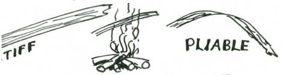
pulled taut, then it is suitable for rope making, providing that the material will 'bite’ together and is not smooth or slippery.
You will find these qualities in all sorts of plants, in ground vines, in most of the longer grasses, in some of the water reeds and rushes, in the inner barks of many trees and shrubs, and in the long hair or wool of many animals.
Some green freshly gathered materials may be 'stiff’ or unyielding. When this is the case try passing it through hot flames for a few moments. The heat treatment should cause the sap to burst through some of the cell structure, and the material thus becomes pliable.
Fibres for rope making may be obtained from many sources:
Surface roots of many shrubs and trees have strong fibrous bark;
Dead inner bark of fallen branches of some species of trees and in the new growth of many trees such as willows;
In the fibrous material of many water and swamp growing plants and rushes;
In many species of grass and in many weeds;
In some sea weeds;
In fibrous material from leaves, stalks and trunks of many
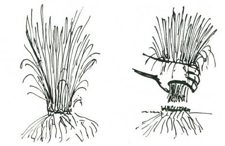
palms;
In many fibrous-leaved plants such as the aloes.
GATHERING AND PREPARATION OF MATERIALS
In some plants there may be a high content of vegetable gum and this can often be removed by soaking in water, or by boiling, or again, by drying the material and 'teasing’ it into thin strips.
Some of the materials have to be used green it any strength is required. The materials that should be green include the sedges, water rushes, grasses, and lianas.
Grasses, sedges and water rushes should be cut and never p ulled. Cutting above ground level is 'harvesting,’ but pulling up the plant means its 'destruction.’
It is advisable not to denude an area entirely but to work over a wide location and harvest the most suitable material, leaving some for seeding and further growth.
For the gathering of sedges and grasses, be particularly careful therefore to 'harvest’ the material, that is, cut what you require above ground level, and take only from the biggest clumps.
By doing this you are not destroying the plant, but rather aiding the natural growth, since your harvesting is truly pruning.
You will find that from a practical point of view this is far the easiest method.
M any of the strong-leafed plants are deeply rooted, and you simply cannot pull a leaf off them.
Palm fibre in tropical or sub-tropical regions is harvested. You will find it at the junction of the leaf and the palm trunk, or you will find it lying on the ground beneath many palms. Palm fibre is a
'natural’ for making ropes and cords.
Fibrous matter from the inner bark of trees and shrubs is generally more easily used if the plant is dead or half dead. M uch of the natural gum will have dried out and when the material is being teased, prior to spinning, the gum or resin will fall out in fine powder.
There may be occasions when you will have to use the bark of green shrubs, but avoid this unless it is absolutely essential, and only cut a branch here and there. Never ever cut a complete tree
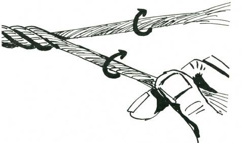
just because you want the bark for a length of cord.
TO MAKE CORD BY S PINNING WITH THE FINGERS
Use any material with long strong threads or fibres which you have previously tested for strength and pliability. Gather the fibres into loosely held strands of even thickness. Each of these strands is twisted clockwise. The twist will hold the fibre together. The strands should be from 1/8” downwards–for a rough and ready rule there should be about 15 to 20 fibres to a strand. Two, three or four of these strands are later twisted together, and this twisting together or 'laying’ is done with an anti-clockwise twist, while at the same time the separate strands which have not yet been laid up are twisted clockwise. Each strand must be of equal twist and thickness.

This illustration shows the general direction of twist and the method whereby the fibres are bonded into strands. In similar manner the twisted strands are put together into lays, and the lays into ropes. Illustrated in this diagram is a two strand lay.
The person who twists the strands together is called the
'layer,’ and he must see that the twisting is even, that the strands are uniform, and that the tension on each strand is equal. In laying, he must watch that each of the strands is evenly 'laid up,’ that is, that one strand does not twist around the other two. (A thing you will find happening the first time you try to 'lay up.’)
When spinning fine cords for fishing lines, snares, etc., considerable care must be taken to keep the strands uniform and the lay even. Fine thin cords of no more than one-thirty-second of an inch thickness can be spun with the fingers and they are capable of taking a breaking strain of twenty to thirty lbs. or more.
Normally two or more people are required to spin and lay up the strands for cord.
M any native people when spinning cord do so unaided, twisting the material by running the flat of the hand along the thigh, with the fibrous material between hand and thigh and with the free hand they feed in fibre for the next 'spin.’ By this means one person can make long lengths of single stands.
This’ method of making cord or rope with the fingers is slow if any considerable length of cord is required.
A more simple and easy way to rapidly make lengths of rope of fifty to a hundred yards or more in length is to make a ropewalk and set up multiple spinners in the form of cranks. The series of photographic illustrations on the succeeding pages show the details of rope spinning.
In a rope walk, each feeder holds the material under one arm and with one free hand feeds it into the strand which is being spun by the crank. The other hand lightly holds the fibres together till they are spun. As the lightly spun strands are increased in length they must be supported on cross bars. Do not let them lie on the ground. You can spin strands of twenty to one hundred yards before laying up. Do not spin the material in too thickly. Thick strands do not help strength in any way, rather they tend to make a weaker rope.
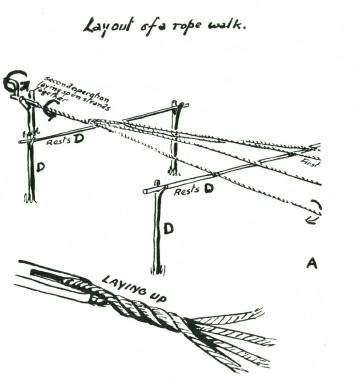
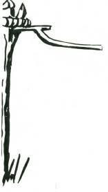
S ETTING UP A ROPEWALK
When spinning ropes of ten yards or longer it is necessary to set cross bars every two or three yards to carry the strands as they are spun. If cross bars are not set up the strands or rope will sag to the ground, and some of the fibres will tangle up with grass, twigs or dirt on the ground. Also the twisting of the free end may either be stopped or interrupted and the strand will be unevenly twisted.
The easiest way to set up crossbars for the rope walk is to drive pairs of forked stakes into the ground about six feet apart and at intervals of about six to ten feet. The cross bars must be smooth, and free from twigs and loose portions of bark that might twist in with the spinning strands.
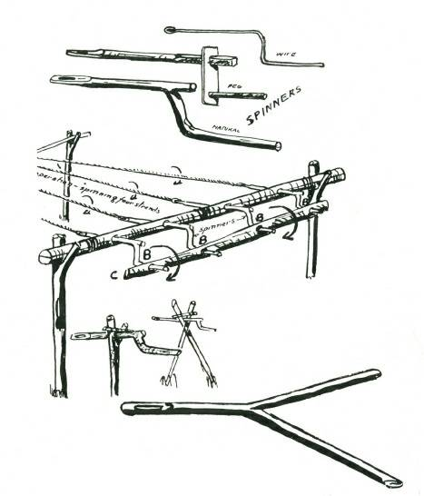
The cross bar A is supported by two uprights, and pierced to take the cranks B. These cranks can be made out of natural sticks,
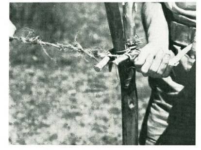
morticed slab, and pegs, or if available, bent wire. The connecting rod C enables one man to turn all cranks clockwise simultaneously.
Crossbars supporting the strands as they are spun are shown D. A similar crank handle to C is supported on a fork stick at the end of the rope walk. This handle is turned in reverse (anti-clockwise) to the cranks C to twist the connected strands together. These are
'laid up’ by one or more of the feeders.
Always make it a rule to turn the first strand clockwise, then the laying up of the strands will be done anti-clockwise and the next laying will again be clockwise.
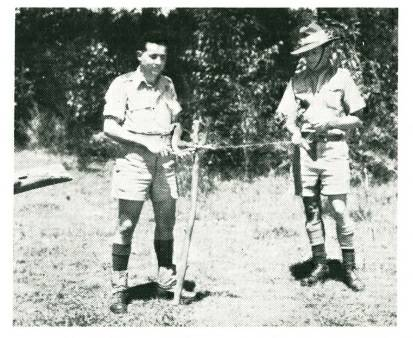
Bark fibre being spun into strands using a single crank handle.
Spinner-feeder on right with bundle of material under his right arm feeds in material.

Joining the strands prior to lay up.

Testing the rope of bark fibre, breaking strain 1” diameter, about 800 lbs.

Close up of the finished rope.
Proof that your rope is well made will be if the individual fibres lie lengthways along the rope.
In the process of laying up the strands, the actual twisting together, or laying will take some of the original 'twist’ out of the strand which has not yet been laid. Therefore it is necessary to keep twisting the strands whilst laying together.
When making a rope, too long to be spun and laid in one piece, a section is laid up, and coiled on the ground at the end of the rope walk farthest from the cranks. Strands for a second length are spun, and these strands are married or spliced into the strands of the first section and then the laying up of the second section continues the rope.
The actual 'marrying’ of the strands is done only in the last lay, which when completed makes the rope. The ends where the strands are married should be staggered in different places. By this means rope can be made and extended in sections to a great length.
After your complete length of rope is laid up, pass it through fire, to burn off the loose ends and fibres. This will make your rope smooth and most, professional looking.
LAYING THE S TRANDS
The strands lie on these crossbars as they are spun. When the strands have been spun to the required length, which should be no more than about a hundred feet, they are joined together by being held at the far end. They are then ready for laying together.
The turner, who is facing the cranks, twists the ends together anti-clockwise, at the same time keeping his full weight on the rope and which is being layed up. The layer advances placing the strands side by side as they turn.
Laying up is very fast when the layer is experienced. He quickly gets the feeling of the work.
It is important to learn to feed the material evenly, and lay up slowly, thereby getting a smooth even rope. Do not try to rush the ropemaking. If you do you will have uneven, badly spun strands, and ugly lays, and poor rope. Speed in ropemaking only comes with practice. At first it will take a team of three or four up to two hours or more to make a 50-yard length of rope of three lays, each of three strands, that is nine strands for a rope with a finished diameter of about 1 inch. With practice the same three or four people will make the same rope in 15 to 20 minutes. These times do not include time for gathering material.
In feeding, the free ends of the strands twist in the loose material fed in by the feeder. The feeder must move backwards at a speed governed by the rate at which he feeds. As the feeder moves backwards he must keep a slight tension on the strands.
MAKING ROPE WITH S INGLE S PINNER
Two people can make rope, using a single crank.
A portion of the material is fastened to the eye of the crank, as with the multiple crank, and the feeder holding the free ends of this strand against the bundle of loose material under his arm feeds in, walking backwards. Supporting crossbars, as used in a ropewalk, are required when a length of more than 20 or 30 feet is being spun.
FEEDING
If the feeder is holding material under his left arm, his right hand is engaged in continuously pulling material forward to his left hand which feeds it into the turning strand. These actions done together as the feeder walks backwards govern the thickness of the st rands. His left hand, lightly closed over the loose turning material, must 'feel’ the fibres 'biting’ or twisting together.
When the free end of the turning strand, which is against the loose material under his arm takes in too thick a tuft of the material he closes his left hand, and so arrests the twist of the material between his left hand and his bundle. This allows him to tease out the overfull 'bite,’ with his right hand, and so he maintains a uniform thickness of the spinning strand. There is a knack in
'feeding' and once you have mastered this knack you can move backwards, and feed with considerable speed.
THICKNES S OF S TRANDS
Equal thickness for each of the strands throughout their length, and equal twist are important. The thickness should not be greater than is necessary with the material being used. For grass rope, the strand should not be more than ¼-inch diameter, for coarse bark or palm not more than 1/8 or 3/16, for fine bark, hair or sisal fibre not more than 1/8 inch.
For cords the strand should be no more than one-sixteenth inch in diameter.
Fine cords cannot be made from grass, unless the fibres are separated by beating out and 'combing.’
The correct amount of twist is when the material is 'hard,’ that is, the twist is tight.
FAULTS COMMON WITH BEGINNERS
There is a tendency with the beginner to feed unevenly. Thin wispy sections of strand are followed by thick hunky portions. “
Such feeding is useless. Rope made from such strands will break with less than one-quarter of the possible strain from the material.
The beginner is wise to twist and feed slowly, and to make regular, even strands rather than rush the job and try and make the strands quickly. Speed, with uniformity of twist and thickness, comes only with practice. In a short time when you have the 'feel’
of feeding, you will find you can feed at the rate of from thirty to sixty feet a minute.
Thick strands do not help. It is useless to try and spin up a rope from strands an inch or more in thickness. Such a rope will break with less than half the potential strain of the material.
Spinning 'thick’ strands does not save time in ropemaking.
LIANAS, VINES AND CANES
Lianas and ground vines are natural ropes, and grow in subtropical and tropical scrub and jungle. M any are of great strength, and useful for bridging, tree climbing and other purposes. The smaller ground vines when plaited give great strength and flexibility. Canes, and stalks of palms provide excellent material if used properly. Only the outer skin is tough and strong, and this

skin will split off easily if you bend the main stalk away from the skin. This principle also applies to the splitting of lawyer cane
(calamus), all the palm leaf stalks and all green material. If the split starts to run off, you must bend the material away from the thin side, and then it will gradually gain in size, and come back to an even thickness with the other split side.
BARK FIBRES
The fibres in many barks which are suitable for rope making are close to the innermost layer. This is the bark next to the sap wood.
When seeking suitable barks of green timber, cut a small section about three inches long, and an inch wide. Cut this portion right from the wood to the outer skin of the bark.
Peel this specimen, and test the different layers. Green bark fibres are generally difficult to spin because of 'gum’ and it is better to search around for windfallen dead branches and try the inner bark of these. The gum will probably have leached out, and the fibres separate very easily.
M any shrubs have excellent bark fibre, and here it is advisable to cut the end of a branch and peel off a strip of bark for testing.
Thin barks from green shrubs are sometimes difficult to spin into fine cord and it is then easier to use the lariat plait for small cords.
Where it is necessary to use green bark fibre for rope spinning
(if time permits), you will find that the gum will generally wash out when the bark is teased and soaked in water for a day or so.
After removing from the water; allow the bark strips to partly dry out before shredding and teasing into fibre.
PLAITING
One man may require a considerable length of rope, and if he has no assistance to help him spin up his material he can often find reasonably long material (say, from 1 ft. to 3 ft. or more) and using this material he can plait (or braid) and so make suitable rope. The usual three plait makes a flat rope, and while quite good, has not the finish or shape, nor is it as 'tight’ as the four or lariat plait. On other occasions it may be necessary to plait broad bands for belts or for shoulder straps. There are many fancy braids and plaits which you can develop from these, but these three are basic, and essential for practical woodcraft work.
A general rule for all plaits is to work from the outside in to the centre.
THREE PLAIT
Take the right-hand strand and pass it over the strand to the

left.
Take the left-hand strand and pass it over the strand to the right and repeat alternately from left to right.
FLAT FOUR PLAIT

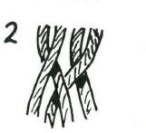
Lay the four strands side by side. Take the right-hand strand as in Fig. 1 and lay it over the strand to the left.
Now take the outside left-hand strand as in Fig. 2 and lay it under the next strand to itself and over what was the first strand.

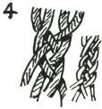
Take the outside left strand and put it under and over, the next two strands respectively moving towards the right.
Thereafter your right-hand strand goes over one strand to the left, and your lett-hand strand under and over to the right, as shown in Fig. 4.
BROAD PLAIT

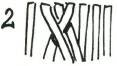
To commence. Take six, seven or more strands, and hold them flat and together.
Take a strand in the centre and pass it over the next strand to the left, as in Fig. 1.
Take the second strand in the centre to the left and pass it towards the right over the strand you first took so that it points towards the right as in Fig. 2.
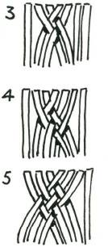
Now take the next strand to the first one and weave it under and over as in Fig. 3.
Weave the next strands from left and right alternately towards the centre as in Fig. 4, 5, 6.
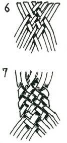
The finished plait should be tight and close as in Fig. 7.
TO FINIS H OFF

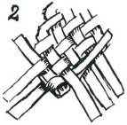
Take one of the centre strands, and lay it back upon itself as in
Fig. 1.
Now take the first strand which it enclosed in being folded back, and weave this back upon itself as in Fig. 2.
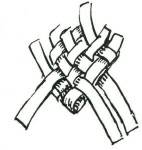
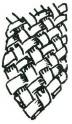
Take a strand from the opposite side, and lay it back and weave it between the strands already plaited.
All the strands should be so woven back that no strands show an uneven pattern, and there should be a regular under-over-under of the alternating weaves.
If you have plaited tightly there may be a difficulty in working the loose ends between the plaited strands.
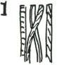
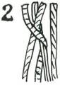
This can be done easily if you sharpen a thin piece of wood to a chisel edge, and use this to open the strands sufficiently to allow the ends being finished to pass between the woven strands.
Roll under a bottle to work smooth after finishing off.
ROUND OR LARIAT PLAIT... FOUR S TRANDS
1. Lay the four strands together side by side, as in Fig. 1, and cross the right-hand centre strand over, and then around the lefthand strand.
2. Take the left-hand outside strand, and pass it over the two
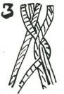

crossed strands, and then under the right-hand one of the two, so that it is pointing towards the left, as in Fig. 2.
3. Take the free right-hand strand, and pass it over the two twisted strands to the left and completely round the left-hand one of the two, as in Fig. 3.

4. Repeat this with the outside left-hand strand as in Fig. 4.
5. Repeat with the right-hand strand as in Fig. 5.
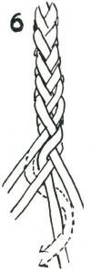
6. The finished plait should look like this.
CLIMBING WITH FOOTLOCK

Ascent of a cliff face, using a footlock on a grass rope. The grass rope was 3 strand 3 lay of 2 inches diameter.
CAUTION
Prior to trusting your life to a bush-made rope, always test it.
Tie one end to a tree and put three or four fellows onto the other end. Have them take the strain gently until finally all their weight is on the rope. If they cannot break it, then it is safe for one man at a time to use it to climb or descend a cliff face.
When climbing up a bush-made rope always use the footlock, and when descending never slide down the rope. Climb down again using the same footlock.
The footlock offers a measure of safety, and the climber is so secure that he can actually stand on the rope and rest without his body weight being carried entirely on his arms. To prove this, use the footlock, and clasp the rope to your body with your arms. You will find that you are 'standing’ on the rope and quite secure.
By means of the footlock you can climb to any height on the rope, stopping to rest when your arms tire.
The footlock is made by holding onto the rope with both hands, lifting the knees, and kicking the rope to the outside of one foot. The foot on the opposite side to the rope is 'pointed’ so that the toe picks up the rope, which is pulled over the foot which was against the rope, and under the instep of the foot which 'picked’ it up.
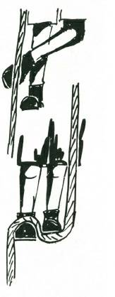
The two feet are brought together, and the rope is now over the instep of one foot, and under the ball of the other. Then, to secure the grip, and lock the rope; the feet are placed one on top of the other so that the rope is clamped down by the foot on top.
By straightening the knees, and raising the hands, the body is lifted, and a fresh grip taken for the next rise.
In descending, the body is bent, the hands lowered, and the footlock released, and a fresh grip taken with the feet at a lower level on the rope.
It is advisable to wear boots or shoes when climbing bush-made ropes.
This method of descending is much safer than sliding. In sliding there is grave risk of bad rope burns to hands and legs.
'ABS YLE’ FOR ROCK DES CENT

Photo with acknowledgment to “ S.M. Herald”
Absyle used for descending rock face. This bush-made grass rope is 3 strand 3 lay of about 2 inches diameter. Breaking strain approx. 400 lbs.